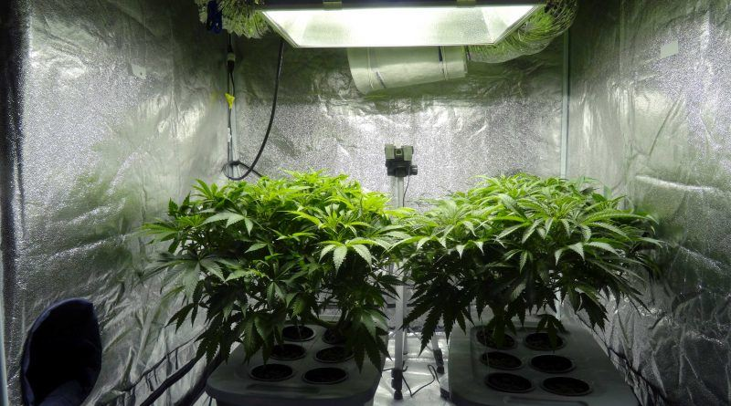
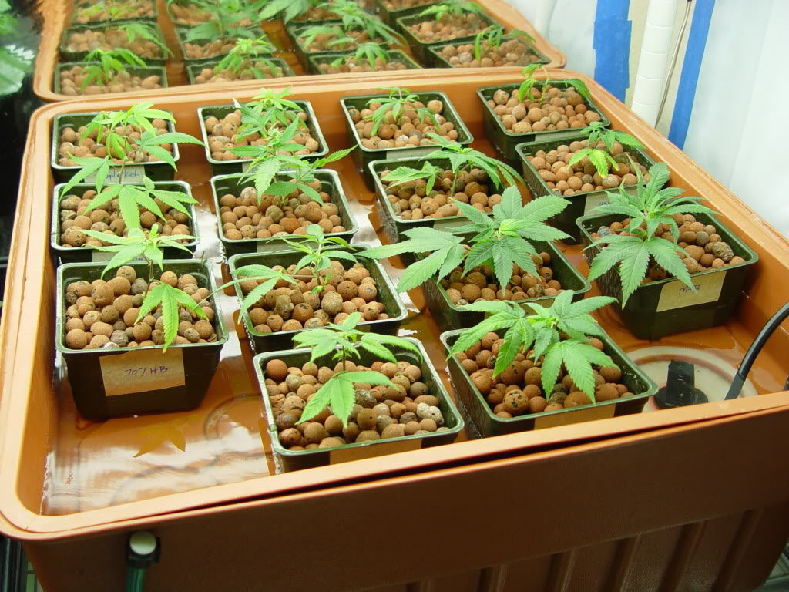
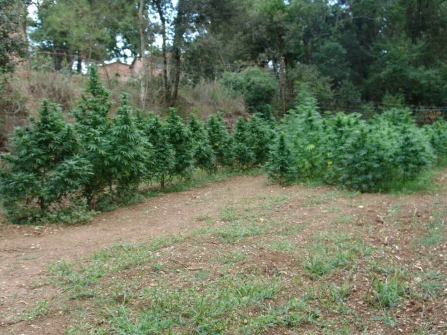
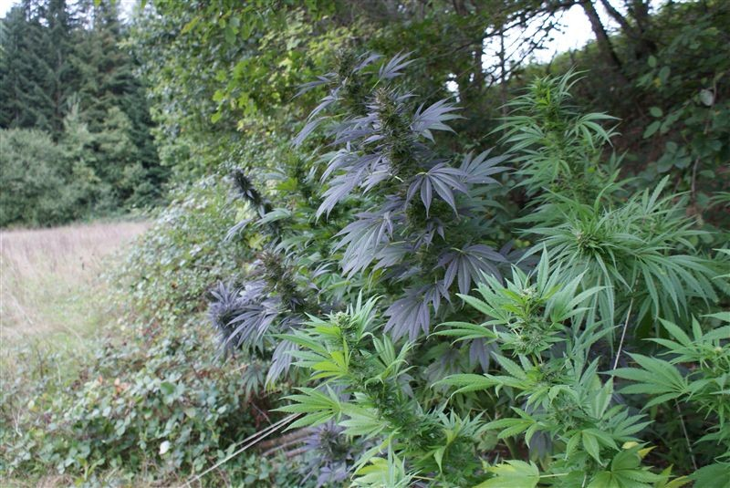

Existen muchos tipos de cultivo para el cannabis. Lo mas básico sería diferenciar entre interior y exterior, pero vamos a ver como hay muchos mas:
Armario - Con un armario se crea el ambiente perfecto para el cultivo de esta planta. Necesaria mucha luz.
Hidropónico - Una de las maneras de cultivo más especiales. Mediante una soolución nutritiva se mantiene a las plantas con las caracteristicas perfectas para su cultivo.
Sencillo - Se planta como una planta más, en el exterior con maceta grande y al sol.
Guerrila - Parecido al exterior sencillo, pero en la naturaleza profunda(generalmente en un lugar secreto/escondido).
Aquí se explica como poder germinar y plantar posteriormente una semilla de marihuana.